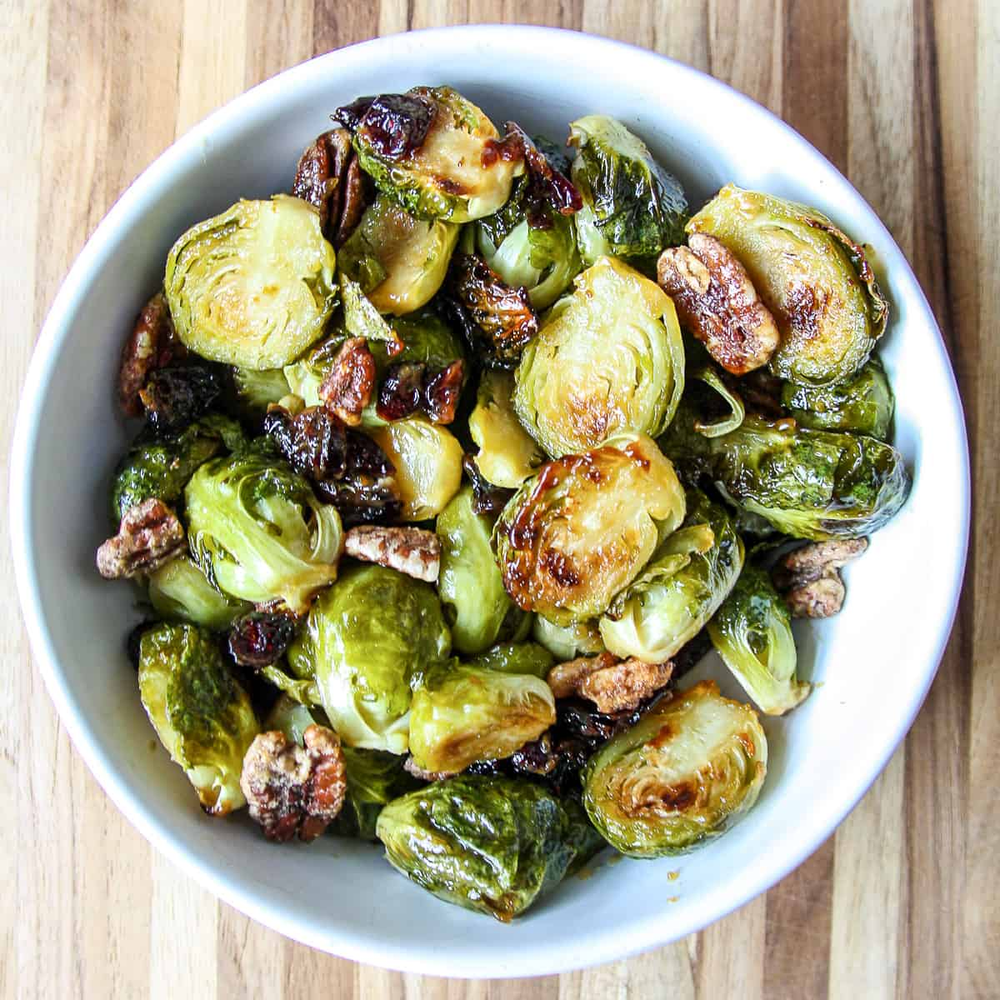

Brown Sugar Brussel Sprouts

Brussel Sprouts tossed in brown sugar, spices, and baked to a crispy consistency.
Crispy and light while also packed with flavor, these brussel sprouts are bound
to put your taste buds in a coma. Here's what you'll need to get started
Ingredients
- brussel sprouts
- olive oil
- brown sugar (dark and light)
- paprika
- cayenne
- red pepper flakes
- salt and pepper to taste
Instructions
- Preheat the oven to 400°. Line a baking sheet with parchment paper or foil.
- Wash the vegetables. Trim the stems of the Brussel sprouts and remove any discolored
outer leaves. Slice them in half lengthwise.
- In a large bowl, add the brussel sprouts, olive oil, brown sugar, and spices. Toss
until evenly coated.
- Spread evenly on the prepared baking sheet. Sprinkle with salt and pepper. Roast in
the center of the oven 20-25 minutes, until sprouts are tender and beginning to caramelize.
- Take out of the oven and serve hot.